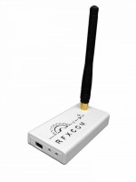

Controlling and monitoring your home with JavaScript.
Created by Kevin McDermott / @bigkevmcd
Uses the v8 JavaScript engine from Chrome.
Just like in the browser, fully asynchronous.
Used by tools like Grunt.js, Bower etc.
Receives and transmits in the 433.92Mhz range.
Translates the received transmissions into bytes and sends them down the USB wire.
Costs around £80 from specialist home-automation retailers
e.g. www.uk-automation.co.uk
or direct from www.rfxcom.com
Supported by a wide range of home-automation software - not all Open Source projects
Domoticz, DomotiGa, Domogik, Ed-win, EventGhost, FHEM, HomeAutom8, Homeseer HS2 and HS3, HomiDom, HouseAgent, Indigo, MeteoHub, OpenHAB, Open Source Automation, Beyond Measure, Digital Home Server, Heyu, Mydombox.com, VERA
Supports a huge range of "popular" hardware
var rfxcom = require('rfxcom');
var rfxtrx = new rfxcom.RfxCom('/dev/ttyUSB0'),
lightwaverf = new rfxcom.Lighting5(rfxtrx, rfxcom.lighting5.LIGHTWAVERF);
rfxtrx.on('security1', function (evt) {
if (evt.deviceStatus === rfxcom.security.MOTION) {
lightwaverf.switchOn('0xF09AC8/1');
} else if (evt.deviceStatus === rfxcom.security.NOMOTION) {
lightwaverf.switchOff('0xF09AC8/1');
}
});
rfxtrx.initialise(function () {
console.log('Device initialised');
});
Send a 14 byte Interface command – Reset packet (hex 0D 00 00 00 00 00 00 00 00 00 00 00 00 00)
The RFXCOM will now stop the RF receive for 10 seconds. This period is terminated by sending a Status Request.
Wait at least 50 milliseconds (max 9 seconds) then clear the COM port receive buffers.
Send a 14 byte Interface command – Get Status packet (hex 0D 00 00 01 02 00 00 00 00 00 00 00 00 00)
The RFXCOM will respond with the status and the 10 seconds reset timeout is terminated.
If necessary send a select frequency selection command. The 433.92MHz transceiver does not have a frequency select and operates always on 433.92MHz.
The RFXtrx is now ready to receive RF data and to receive commands from the application for the transmitter.
// This is a buffering parser which accumulates bytes until it receives the
// number of bytes specified in the first byte of the message.
// It relies on a flushed buffer, to ensure the first byte corresponds to the
// size of the first message.
// The 'data' message emitted has all the bytes from the message.
self.rfxtrxParser = function() {
var data = [],
requiredBytes = 0;
return function(emitter, buffer) {
// Collect data
data.push.apply(data, buffer);
if (requiredBytes === 0) {
requiredBytes = data[0] + 1;
}
if (data.length >= requiredBytes) {
emitter.emit("data", data.slice(0, requiredBytes));
data = data.slice(requiredBytes);
requiredBytes = 0;
}
};
};
RfxCom.prototype.security1Handler = function(data) {
var self = this,
subtype = data[0],
seqnbr = data[1],
id = "0x" + self.dumpHex(data.slice(2, 5), false).join(""),
deviceStatus = data[5] & ~0x80,
batterySignalLevel = data[6],
evt = {
subtype: subtype,
id: id,
deviceStatus: deviceStatus,
batteryLevel: batterySignalLevel & 0x0f,
rssi: batterySignalLevel >> 4,
tampered: data[5] & 0x80
};
self.emit("security1", evt);
};
rfxtrx.on('th3', function(evt){
// Oregon Scientific Temperature and Humidity
subtype: 0x03, // Different models indicated.
id: '0xFE01', // Unique per device
seqnbr: 0x09, // message id generated by device (or sent to device) mod 256
temperature: 0x14, // Degrees Celsius
humidity: 0x32, // Relative Humidity %
humidityStatus: 0x03, // Normal, Comfort, Dry, Wet
batteryLevel: 9, // 0-9 strength of battery
rssi: 4, // Signal strength
});
rfxtrx.on('elec2', function(evt){
// OWL Electricity Monitoring hardware
subtype: 0x01, // CM119/CM160 commonly available in the UK
id: '0xFE02', // Unique per device
seqnbr: 0x0A, // message id generated by device (or sent to device) mod 256
currentWatts: 370, // Currently detected energy consumption
totalWatts: 30225.82, // Total measured by device
batteryLevel: 9, // 0-9 strength of battery
rssi: 4, // Signal strength
});
rfxtrx.on('security1', function(evt){
// X10, KD101, Visonic, Meiantech, SA30 PIRs and Window Sensors
subtype: 0x01, // X10 Security hardware
id: '0xFE0204', // Unique per device
seqnbr: 0x0B, // message id generated by device (or sent to device) mod 256
deviceStatus: 0x04, // X10 security sensor motion detected
tampered: 0, // Tamper detection on devices
batteryLevel: 9, // 0-9 strength of battery
rssi: 4, // Signal strength
});
var rfxtrx = new rfxcom.RfxCom('/dev/ttyUSB0');
var lighting5 = new rfxcom.Lighting5(rfxtrx, rfxcom.lighting5.LIGHTWAVERF);
lighting5.switchOn('0xF09ACA/01');
rfxtrx.delay(3000); // Sleep for 3 seconds
lighting5.switchOff('0xF09ACA/01');
rfxtrx.delay(3000); // Sleep for 3 seconds
lighting5.switchOn('0xF09ACA/01', {level: 6});
var rfxtrx = new rfxcom.RfxCom('/dev/ttyUSB0');
var curtain1 = new rfxcom.Curtain1(rfxtrx);
curtain1.open('0x41/01');
rfxtrx.delay(3000); // Sleep for 3 seconds
curtain1.stop('0x41/01');
rfxtrx.delay(3000); // Sleep for 3 seconds
curtain1.close('0x41/01');
var rfxtrx = new rfxcom.RfxCom('/dev/ttyUSB0');
var lighting1 = new rfxcom.Lighting1(rfxtrx, rfxcom.lighting1.ARC);
lighting1.chime('C14');
var SunCalc = require('suncalc'), moment = require('moment');
var turnLightsFiftyPercent = function () {
var times = SunCalc.getTimes(moment(), 55.858, -4.259);
if (times.sunrise > new Date()) {
lightwave.switchOn('0xFAC271/1', {level: 0x10});
}
};
var job = new cronJob('00 50 06 * * 1-5', turnLightsFiftyPercent, null, true);
var job = new cronJob('00 55 06 * * 1-5', turnLightsFullOn, null, true);
rfxtrx.initialise(function (error) { if (error) { throw new Error('Unable to initialise the rfx device'); }; });
var turnLightsFullOn = function () {
var times = SunCalc.getTimes(moment(), 55.858, -4.259);
if (times.sunrise > moment().subtract('minutes', 5)) {
lightwave.switchOn('0xFAC271/1', {level: 0x1F});
}
};
var rfxcom = require('rfxcom'),
pg = require('pg').native,
conString = 'pg://user:password@localhost/user',
client = new pg.Client(conString);
var rfxtrx = new rfxcom.RfxCom('/dev/ttyUSB0');
rfxtrx.on('elec2', function (evt) {
// Requires a PostgreSQL table
// CREATE TABLE energy (recorded_time timestamp DEFAULT NOW(),
// device_id VARCHAR, current_watts FLOAT)
client.query('INSERT INTO energy(device_id, current_watts) values($1, $2)',
[evt.id, evt.currentWatts]);
});
rfxtrx.initialise(function () {
console.log('Device initialised');
});
server.get('/light/:device/:code/:option/', function (req, res, next) {
var deviceId = req.params.device + '/' + req.params.code,
statusCode = 200;
switch (req.params.option) {
case 'on':
lightwave.switchOn(deviceId);
break;
case 'off':
lightwave.switchOff(deviceId);
break;
default:
console.log('Unknown option', req.params.option);
statusCode = 400;
break;
}
res.send(statusCode);
return next();
});
describe('.switchOn', function(){
beforeEach(function (){
lighting5 = new rfxcom.Lighting5(device, rfxcom.lighting5.LIGHTWAVERF);
});
it('should send the correct bytes to the serialport', function(done){
var sentCommandId;
lighting5.switchOn('0xF09AC8/1', function(err, response, cmdId){
sentCommandId = cmdId;
done();
});
expect(fakeSerialPort).toHaveSent([0x0A, 0x14, 0x00, 0x00, 0xF0, 0x9A, 0xC8, 0x01, 0x01, 0x1F, 0x00]);
expect(sentCommandId).toEqual(0);
});
});
MQ Telemetry Transport (MQTT) - lightweight messaging protocol.
MQTT.js allows subscription to "topics" which can be used notify of events
e.g. subscribe /home/temperature/conservatory